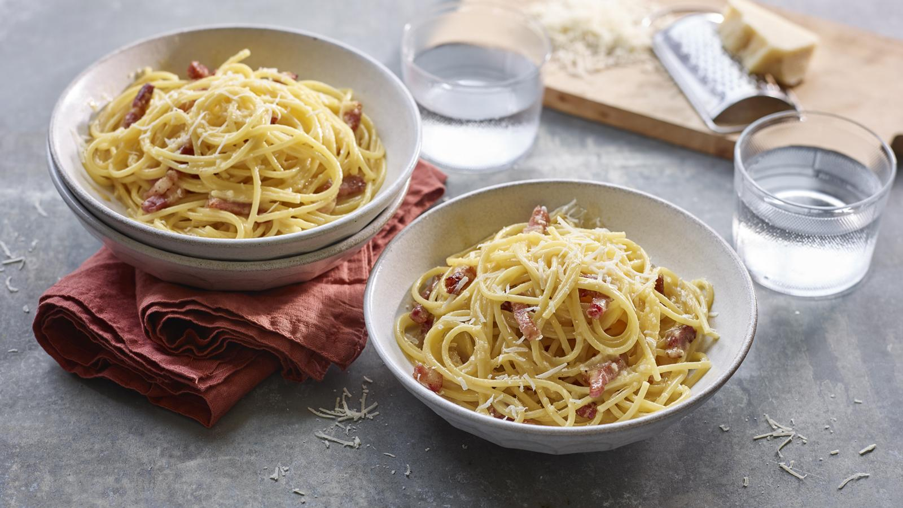

Spaghetti Carbonara

Description
This simple pasta dish uses just 5 ingredients to create a creamy Italian classic.
Ingredients
- 400g guanciale or pancetta, rind removed, cut into 5mm/0.25in slices and chopped into thick strips
- 2 free-range eggs, plus 4 free-range egg yolks
- 50g/1.75oz pecorino romano cheese, grated, plus 30g/1oz to serve
- 90g/3.25oz Grana Padano cheese, grated, plus 30g/1oz to serve
- 400g/14oz spaghetti
- salt and freshly ground black pepper
To serve
- 30g/1oz pecorino romano cheese, grated
- 30g/1oz pecorino romano cheese, grated
Instructions
- Gently fry the guanciale in a frying pan over a low heat for 10–15 minutes. This will slowly render the fat and allow the guanciale to crisp up. Transfer the guanciale from the fat to kitchen paper using a slotted spoon and pat dry. Dispose of three quarters of the fat in the pan and keep the rest for the pasta.
- To create the sauce, whisk the yolks, eggs and the grated cheeses in a large heatproof glass bowl. Place the bowl over a saucepan of gently simmering water and cook gently, whisking constantly, until a thick custard-like consistency is reached. It should take about 2–3 minutes. Do not allow the water to reach boiling point or it will scramble the eggs. It is not essential, but if you have a kitchen thermometer the sauce will be ready when it has reached a temperature of about 62C.
- Drop the spaghetti in a large saucepan of boiling salted water and cook according to packet instructions or until al dente. Stir every now and then. Drain the pasta and reserve a mug of the cooking water.
- Place the pasta in the frying pan with the reserved fat and mix well. Add the sauce to the pasta and then add a splash of pasta water to loosen the sauce until it reaches a creamy consistency. Stir and toss the pasta in the sauce to make sure it is well coated. You can do this in the bowl where you have whisked the eggs and cheese if you prefer. Add the crispy guanciale and lots of freshly ground black pepper.
- Serve in large pasta bowls topped with the extra grated cheeses.